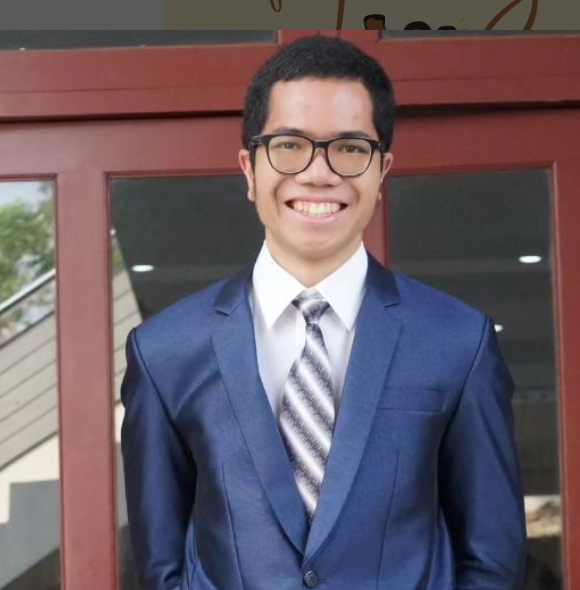

perintah:
Buat sebuah webpage yang memperkenalkan dirimu.

Bostang Palaguna saat ini adalah mahasiswa teknik elektro tahun keempat di Institut Teknologi Bandung. Ia menunjukkan pemahaman teoritis yang kuat dalam bidang teknik elektro, terlihat bukan hanya dari IPK-nya yang patut dipertimbangkan yaitu >3.5/4.00 (sampai semester 7), tetapi juga dari dedikasinya untuk berbagi pengetahuan sebagai asisten akademis dua kali, sekali dalam kelas pemrosesan sinyal digital dan sekali dalam kelas elektromagnetik teknik. Selain itu, ia telah membuat lebih dari 60 jam video pendidikan di saluran YouTube-nya.
Yang membedakan dirinya adalah kemampuannya menghubungkan konsep teoritis dengan aplikasi dunia nyata, yang terlihat melalui keterlibatannya aktif di laboratorium teknik elektro. Bostang telah menjadi asisten tiga kali (lab Rangkaian Elektrik, lab Elektronika, dan lab Sistem Kontrol) dan koordinator dua kali (lab Elektronika dan Elektronika II). Selain itu, ia telah menyelesaikan beberapa proyek elektronika, menunjukkan keahliannya dalam pemahaman teoritis dan keterampilan praktis. Anda dapat melihat portofolionya di bagian 'proyek' di profil LinkedIn-nya, lengkap dengan dokumentasi di GitHub.
Secara luar biasa, Bostang telah berpartisipasi dalam berbagai program kepemimpinan dan organisasi sepanjang studi universitasnya. Ini termasuk program AIESEC Future Leader (AFL) Summer Peak 2022 oleh komunitas pemuda AFL di Bandung, Pelatihan Kepemimpinan untuk Mahasiswa (LKM) IX ITB 2022 yang diselenggarakan oleh Direktorat Urusan Mahasiswa (DITMAWA) ITB, dan pelatihan dasar militer 2023/2024 dengan Resimen Mahasiswa Maharwan YON I/ITB. Ini menunjukkan kompetensinya tidak hanya dalam aspek teknis tetapi juga dalam keterampilan interpersonal dan intrapersonal.
Ia secara aktif berkontribusi pada Badan Eksekutif Mahasiswa (HME ITB) sebagai Menteri Pendidikan dan Kepala Divisi Pengembangan Sumber Daya Manusia di WORKSHOP HME ITB. Selain itu, Bostang juga memiliki pengalaman sebagai mentor di LKM, menunjukkan kemampuannya untuk bekerja secara efektif dan mengelola tim.
Bostang antusias tentang kesempatan untuk bekerja dengan Anda dan akan bersyukur jika potensinya dan pengetahuannya dapat dimanfaatkan untuk memberikan dampak signifikan pada masyarakat.
Jika Anda tertarik untuk mengetahui lebih lanjut tentangnya, Anda dapat menghubungi Bostang melalui email di:
bostangsteiitb2020@gmail.com atau menjelajahi jejak digitalnya yang terkumpul di: https://linktr.ee/bostang